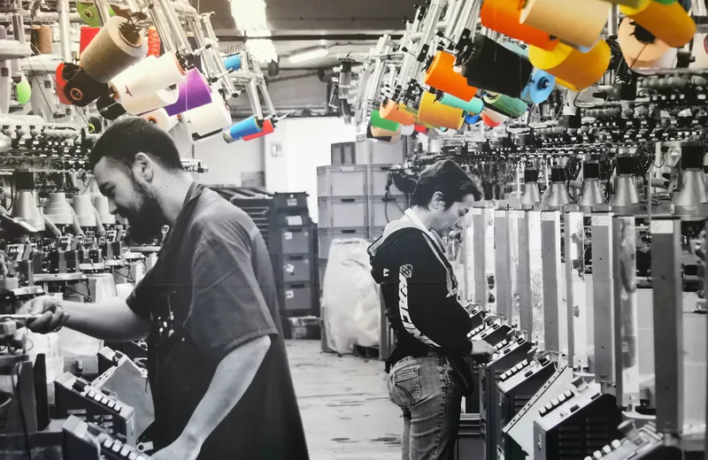
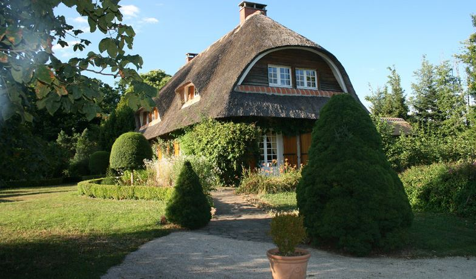
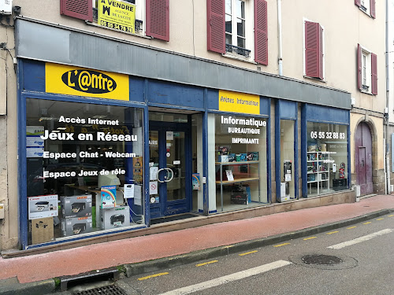
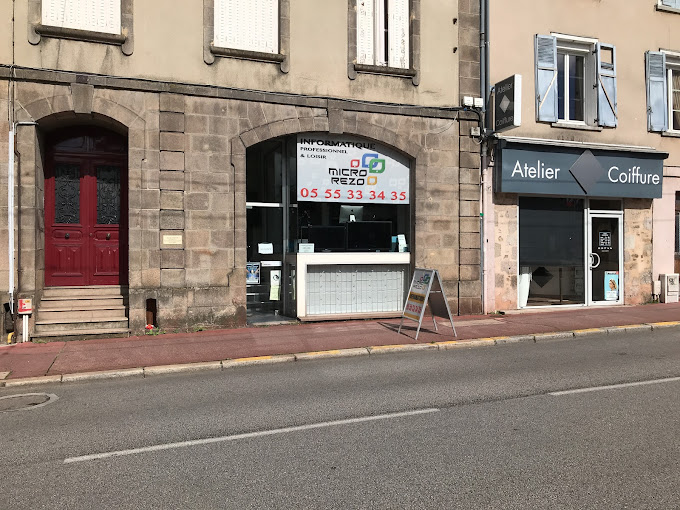
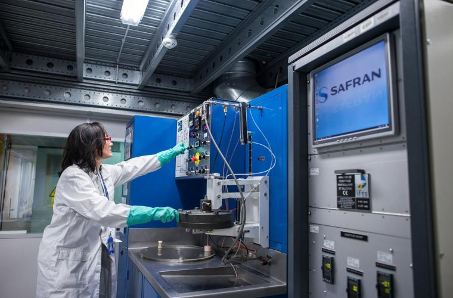

Plus d'info ?Entreprise : Broussaud Textile, les Cars
Durée : 20 Janvier 2025 - 21 Février 2025
Mission : Développement d'applications web interne a l'entreprise.
Fondée en 1938, Broussaud Textiles est une entreprise familiale française spécialisée dans la fabrication de chaussettes et de collants.
Située à Les Cars, en Limousin, elle perpétue depuis trois générations un savoir-faire artisanal reconnu par le label
"Entreprise du Patrimoine Vivant" (EPV), décerné par l'État français pour distinguer les entreprises aux savoir-faire artisanaux
et industriels d’excellence.
✅ Conception et développement d'un formulaire d'ajout de partenaire en Symfony 7, avec intégration de React.js pour une interface utilisateur moderne et dynamique.
✅ Mise en place d'un système de lecture et de récupération de données à partir de fichiers Excel (.xlsx) en utilisant PHP et la bibliothèque PHPSpreadsheet, permettant l'extraction et l'intégration des données dans divers systèmes d'information.
✅ Réalisation d'un Projet d'entraînement en PHP (jeu de bataille) pour renforcer mes compétences en programmation orientée objet et en respect des bonnes pratiques de développement.
❌ Participation au développement d'une API en C# pour la synchronisation de bases de données (MSSQL, MariaDB, PostgreSQL et Sage), bien que ce Projet ait été abandonné en raison de sa complexité et de contraintes techniques.
Formulaire d'ajout de partenaire :
* Conception et développement complet du formulaire, de la base de données MariaDB à l'interface utilisateur React.js, en respectant les normes RGPD et les contraintes de l'entreprise.
* Intégration du chiffrement bcrypt pour la protection des données sensibles.
Système de lecture de données Excel :
* Création d'un service de lecture et de validation des données, avec gestion des erreurs et contrôle du format des fichiers (.xlsx).
* Mise en place d'un contrôleur Symfony pour gérer l'importation des données et les interactions avec le client.
* Développement d'une interface utilisateur en JavaScript pour l'envoi du fichier et l'affichage des résultats.
Entreprise : LC-NETWORK, Nexon
Durée : 13 Mai 2024 - 14 Juin 2024
Mission : Développement d'applications web en Symfony, servant principalement à la domotique
LC-Network est une entreprise spécialisée dans le développement d’applications web.
Son produit phare est UbiCaisse, une application de caisse enregistreuse,
conçue pour répondre aux différents besoins des commerçants.
Autrefois, cette bâtisse abritait Les Chaumières,
un restaurant gastronomique réputé situé à Nexon.
Après la fermeture de l'établissement, le lieu a été reconverti en un espace dédié au développement web.

✅ Installation et configuration d'un environnement macOS pour le développement, incluant la mise à niveau du système d'exploitation et la récupération de données.
✅ Conception et développement d'un système de notifications sonores pour les changements d'état de panneaux photovoltaïques, avec intégration de scripts AppleScript, LUA et d'une application web PHP.
✅ Analyse de données de production solaire et développement d'algorithmes en PHP pour la prédiction de tendances et l'optimisation de la consommation énergétique.
✅ Création d'une interface web pour l'historique de production journalière, avec intégration de graphiques et d'un plugin de calendrier jQuery.
✅ Mise en place d'un système de login sécurisé avec Symfony, incluant la gestion des utilisateurs et des permissions.
Système de notifications sonores :
* Création d'un script AppleScript pour la lecture de messages vocaux personnalisés, déclenchés par des événements du système domotique.
* Intégration avec un module Fibaro et une application web PHP pour la gestion des notifications.
Analyse et prédiction de production solaire :
* Développement d'algorithmes en PHP pour le calcul de moyennes et de variances, et pour la prédiction de tendances de production.
* Intégration dans une application web pour la visualisation des données et la personnalisation des paramètres.
Application web d'historique de production :
* Conception et développement d'une interface utilisateur pour la consultation de l'historique de production journalière.
* Intégration de graphiques interactifs et d'un plugin de calendrier pour faciliter la navigation et l'analyse des données.
Système de login sécurisé :
* Mise en place d'un système d'authentification avec Symfony, incluant le hachage des mots de passe et la gestion des rôles utilisateurs.
* Développement d'une interface de connexion et de déconnexion sécurisée.

Plus d'info ?Entreprise : Arène-Informatique, Limoges
Durée : Janvier 2023 - Février 2023
Mission : Assistance et résolution de problèmes techniques liés aux ordinateurs, logiciels et périphériques.
Au sein de ce service composé de deux employés, j'ai eu l'opportunité de collaborer sur des interventions variées auprès des clients.
Ce stage m'a permis de développer des compétences techniques en dépannage et maintenance informatique.
✅ Diagnostic et résolution de pannes matérielles et logicielles.
✅ Installation et mise à jour de logiciels et systèmes d'exploitation.
✅ Configuration et dépannage d'imprimantes et autres périphériques.
✅ Mise en place de sauvegardes et protection contre les virus.
Assistance et maintenance :
* Diagnostic et réparation des pannes sur PC et périphériques.
* Support technique auprès des clients pour résoudre divers problèmes logiciels.
Installation et configuration :
* Installation de nouveaux logiciels et mise à jour des systèmes.
* Configuration de périphériques (imprimantes, scanners, routeurs).
Entreprise : LC-NETWORK, Nexon
Durée : Octobre 2023 - Novembre 2023
Mission : Développement du site vitrine de visite pour "Le Jardin de Ginette".
"Le Jardin de Ginette" souhaitait crée un site web pour présenter ses espaces, ses collections de plantes et ses informations pratiques.
✅ Analyse des besoins du client.
✅ Conception visuelle et architecture du site web.
✅ Développement du site en HTML, CSS et JavaScript.
✅ Optimisation du site pour une navigation fluide sur tous les appareils (responsive design).
Site vitrine de visite "Le Jardin de Ginette" :
* Création d'une maquette visuelle pour présenter l'architecture du site et l'esthétique générale.
* Développement des différentes pages du site en utilisant HTML, CSS et JavaScript
* Intégration d'images attrayantes et de descriptions détaillées des espaces du jardin.
* Optimisation du site pour une navigation fluide sur tous les appareils (responsive design).

Plus d'info ?Entreprise : Micro-Rezo, Limoges
Durée : 14 Mars 2022 - 15 Avril 2022
Mission : Assistance au service de dépannage informatique.
Intégré à une équipe de deux professionnels, j'ai eu l'occasion de collaborer sur diverses interventions auprès des clients.
Cette expérience m'a permis de développer mes compétences techniques en maintenance et dépannage informatique.
✅ Diagnostic et résolution de problèmes techniques (matériels et logiciels).
✅ Configuration d'antivirus et de systèmes d'exploitation.
✅ Remplacement de pièces informatiques.
✅ Analyse de pannes et sauvegarde de données clients.
Assistance au service de dépannage :
* Collaboration avec un employé pour comprendre les solutions de dépannage et de sécurité.
* Participation à l'analyse de pannes et à la mise en place de solutions.
* Contribution à la sauvegarde de données clients.
Entreprise : Safran Filtration Systems, Nexon
Durée : 18 novembre 2019 - 22 novembre 2019
Mission : Découverte des métiers de l'aéronautique et de l'informatique.
Safran Filtration Systems est une entreprise spécialisée dans la conception et la fabrication de systèmes de filtration pour l'aéronautique et le spatial.

Plus d'info ?✅ Découverte des métiers de l'aéronautique et du spatial.
✅ Observation du travail des ingénieurs et des techniciens.
✅ Compréhension des processus de fabrication et de contrôle qualité.
✅ Sensibilisation aux enjeux de la sécurité et de la qualité dans l'industrie.
Bureau d'études :
* Modélisation 3D de pièces d'hélicoptères et de filtres.
* Conception de filtres spatiaux.
Informatique :
* Observation des serveurs et des équipements informatiques.
* Démontage et remontage d'un ordinateur.
Autres secteurs :
* Marquage, emballage, magasin, réception et expédition.
* Usinage de pièces métalliques.
* Assemblage de toiles filtrantes.
* Soudure de pièces métalliques.